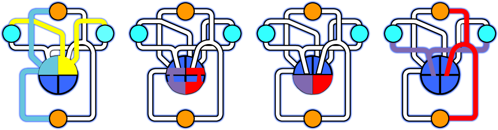
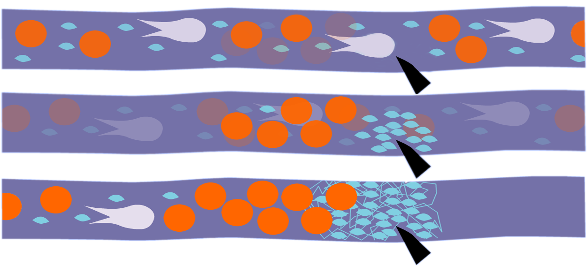

| HOMEPAGE | SISTEMI ED APPARATI | FASI DELLA VITA | ||
| HOMEPAGE | SISTEMI ED APPARATI | FASI DELLA VITA | ||
IL SANGUE
I sangue, unico esempio di tessutotessuto
Insieme di più cellule, più tessuti formano gli organi liquido è un fluido viscoso composto da plasma, una soluzione ricca di proteine (45%) e da elementi figurati: globuli rossi, globuli bianchi, piastrine.STRUTTURA E FUNZIONAMENTO
La pompa che fa funzionare tutto è il cuore è un organo muscolare e quindi si contrae fornendo al sangue la spinta necessaria per raggiungere i vari vasi.PICCOLA E GRANDE CIRCOLAZIONE
Con la piccola circolazione il sangue esce dal ventricolo destro e viene spinto verso i polmoni dove si libera dell'anidride carbonica e si carica di ossigeno.
Il sangue ossigenato ritorna al cuore ed ha inizio il percorso più lungo che prende il nome di grande circolazione.
Nella grande circolazione dal ventricolo sinistro, attraverso ramificazioni sempre più piccole, le arterie raggiungono ogni parte del corpo e portano il sangue ad ogni cellula. Qui avvengono gli scambi di ossigeno e sostanze nutritive con i prodotti di rifiuto delle cellule stesse.
Il sangue che contiene queste sostanze, passando lungo l'intestino si arricchisce di sostanze alimentari e torna verso l'atrio destro, dove ricomincia il ciclo.

COAGULAZIONE
Le piastrine o trombociti sono i più piccoli elementi figurati del sangue, con forma discoidale e diametro compreso tra i 2 ed i 3 µm. Al contrario dei globuli bianchi (o leucociti) e rossi (o eritrociti), le piastrine non sono vere e proprie cellule, ma frammenti di citoplasmacitoplasma
Il citoplasma e' la sostanza viscosa compresa tra la membrana cellulare e l'involucro nucleare. E' formata da acqua, sali minerali e sostanze organiche dei megacariociti localizzati nel midollo rosso. Questi, a loro volta, derivano da precursori chiamati megacarioblasti e si presentano come grosse cellule multinucleate (diametro dai 20 ai 15 nm), che dopo varie fasi di maturazione subiscono fenomeni di frammentazione citoplasmatica, originando dalle 2000 alle 4000 piastrine. I trombociti, di conseguenza, sono privi di nucleo (come i globuli rossi) e di strutture quali il reticolo endoplasmatico e l'apparato di Golgi; sono tuttavia delimitati da una membrana, che rende ogni piastrina indipendente dalle altre, e possiedono granuli, vari organelli citoplasmatici ed RNArna
Acido ribonucleico, fondamentale nella sintesi proteica, costituito da catene singole che si formano sullo stampo del DNA .
PRODUZIONE DEL SANGUE
L’immagine mostra come si formano le cellule del sangue. Dal midollo osseo di un osso lungo (costa, sterno, ecc).staminale
E' un caratteristico tipo di cellula non differenziata presente negli organismi viventi e capace di dare origine a qualsiasi tipo di tessuto , la “supercellula”, per capire come si formano le piastrine che conferiscono al sangue la capacità di formare i coaguli grazie ai quali si arrestano le piccole emorragie. Infatti il megacariocito è una grande cellula che si produce dalla trasformazione di una cellula staminale; essa possiede molti nuclei ma una volta maturo non abbandona mai il midollo osseo e lì produce continuamente numerosi piccoli frammenti del proprio corpo cellulare chiamati piastrine. Una volta formate, le piastrine lasciano il midollo osseo per circolare liberamente nel sangue. Esse si fermano solo nel caso si formi una lacerazione di un vaso, in questo caso le piastrine aderiscono alla ferita aggregandosi fra loro ostruendo la lacerazione. Inoltre le piastrine in questo caso attraggono una proteina denominata fibrina che si trova nel plasma e prodotta dal fegato e vari fattori della coagulazione, indicati con numeri che vanno da a 1° a 13° che permettono la formazione del coagulo.enzimi
Sostanza di natura proteica (una volta detta fermento) che ha proprietà di accelerare una reazione chimica specifica senza esser consumata e senza entrare nei prodotti finali della reazione che lui stesso produce. Una volta distrutto, del germe restano solo alcuni frammenti che sono in grado di attivare il secondo tipo di globulo bianco, i monociti i quali rappresentano la seconda linea di difesa dalle infezione esterne. Infatti i monociti, grosse cellule ben riconoscibili al microscopio per la caratteristica forma del nucleo a “ferro di cavallo”, giunti anch’essi sul luogo dove si era sviluppata l’infezione, dopo l’attacco dei granulociti fagocitano tutto ciò che resta dei frammenti delle cellule, ne analizzano la composizione e trasmettono queste informazioni al terzo tipo di globulo bianco i linfociti i quali sono in grado di produrre gli anticorpi costituendo così l’ultima linea di difesa del corpo dalle infezioni.